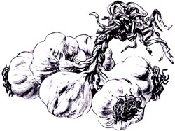
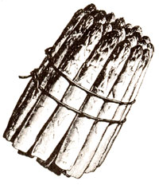

Many gardeners spray the leaves of their crops with foliar fertilizers as a way of supplying the plants with micronutrients such as zinc and boron. There is also a more controversial practice that uses the leaf sprays to provide macronutrients such as nitrogen and phosphorus. Results of this type of foliar feeding have varied considerably. In fact, in some tests macronutrient-sprayed crops have produced worse yields than unsprayed ones. To improve such fertilizers' effectiveness, growers sometimes add surfactants (which keep the liquid from beading up on the leaves) or humectants (which lengthen drying times).
Researchers at Texas A and M University recently tested more than 40 such aids, or adjuvants, to determine whether any of them actually enhanced the uptake of foliarapplied nitrogen and phosphorus by soybeans. The results? Glycerol, an inexpensive alcohol available at drugstores, was the only adjuvant that had a significant positive effect. When just 0.05% glycerol was added to the foliar solution, sprayed leaves contained 8.9% more nitrogen and 34.2% more phosphorus.
Furthermore, while some of the adjuvants that were tested damaged leaves, though concentrations were less than 1%, glycerol caused negligible harm even at 10% concentrations. More research is needed to confirm the Texas findings, but it certainly looks as if gylcerol is the adjuvant of choice for those who want to try macronutrient sprays on their plants.
Garlic oil works. Garlic makes a good insecticide as well as a repellent. A senior-citizen horticulture class in Reedley, California, experimented with a garlic oil spray concocted as follows: Lots of finely minced garlic was soaked in mineral oil for at least 24 hours. About two teaspoons of the oil were added to a pint of water in which 1/4 ounce of Palmolive soap had been dissolved. This was thoroughly stirred, then strained into a glass container for storage. When used as a spray, one or two tablespoons of oil mix was blended into a pint of water.
The results reported by the Reedley class were astonishing! Cabbage moths, cabbage loopers, earwigs, leafhoppers, mosquitoes (including larvae), whiteflies and sonic aphids were killed on contact. Houseflies. June bugs and squash bugs died within a minute after being sprayed. Cockroaches, lygus bugs, slugs and hornworms were killed more slowly. Ladybugs, Colorado potato beetles, grasshoppers, grape leaf skeletonizers, red ants and sow bugs were not affected.
Down with cabbage maggots. Experiments in England over the past decade have shown that protective disks placed around brassica transplants provide excellent protection from cabbage maggots. The five-inchdiameter disks-made from carpet-underlay foam rubber with a small hole in the middle of each one and a slit along the radius-prevent adult flies from laying eggs next to plant stems and encourage maggot-eating ground beetles.
Boost asparagus yields. Extensive New Zealand trials suggest that letting weeds compete with newly transplanted asparagus for more than six weeks will greatly reduce future yields. The tests also show that asparagus beds picked every day yield more spears than those picked less often.
Fewer tillers, more corn. It looks as if too many corn tillers-those extra stems that sometimes shoot up at the bottom of plants-may reduce yields. Experimenters at Alabama's Tuskegee Institute found that more than two tillers per Seneca Chief sweet corn plant increased leaf production at the expense of ear production. This relationship probably won't always hold for other varieties and growing conditions, but it wouldn't hurt to pull off extra tillers in your corn patch-we've never seen any evidence that detillering hurts yields.
Traveling weed seeds. Researchers in Saskatchewan, Canada, set up seed traps it) a fallow field next to a weedy pasture and found that most weed seeds were dispersed only short distances from their parent plants-very few seeds traveled 20 feet or more. (Many weed seeds travel no farther than the height of their parents!) So maintaining a weed-free zone just a few feet wide around your garden should protect it from "migrating" weed seeds. Of course, it won 't do a thing for the seeds that are already there!
Flea beetles prefer white. Canadian entomologists report that flea beetles are most attracted to white sticky traps. (They like yellow traps almost as well, but don't care much for red or green ones.)
A Gardener's Guide to Rooting New Plants is a fine beginner's guide that's available free from Union Carbide Agricultural Products, Attn: Specialty Products Group, P.O. Box 12014, Research Triangle, NC 27709 . . . . Peter Donelan's 80-page Growing to Seed ($3.50 postpaid from Ecology Action, 5798 Ridgewood Rd., Willits, CA 95490) contains all the information needed for you to learn how to save seed from your own garden . . . . Stumped about where to find that special ornamental tree? Then take a look at the 200 listings and addresses in Sources of Shade Trees in the U.S., 1986 (single copies free from Mailing Room, Thorne Development Center, Wooster, OH 44691) . . . . The Seed Corps (P.O. Box 1705, Santa Rosa, CA 95402) is a new nonprofit organizationbacked by master gardener Dick Raymond and actor Eddie Albert-that's planning to train volunteers who will establish demon stration gardens in developing countries . . . . The excellent Landscaping to Save Water in the Desert ($8.95 postpaid from E and H Products, 71301 Hwy. 111, Suite 1, Rancho Mirage, CA 92270) includes drip irrigation basics, extensive lists of low-water-use plants and good color photographs of sample landscapes .. . . The Ames' Orchard and Nursery Catalog (50 cents from AON, 6 E. Elm St., Fay etteville, AR 72701) contains important information on fruit diseases, pests and nutrition, and actually points out the drawbacks as well as the good points of particular tree varieties .... The 30-page booklet Gardening With Southeast Asian Refugees ($3 postpaid from Kelly Kindscher, Rt. 2, Box 394A, Lawrence, KS 66044) describes 22 unusual vegetables that are commonly found in the gardens of Cambodian and Vietnamese refugees . . . . Professional soil tester Robert Parnes provides a detailed, comprehensive and highly practical guide to plant nutrition in his Organic and Inorganic Fertilizers ($12.50 postpaid from Woods End Agricultural Institute, RD 1, Box 4050, Mt. Vernon, ME 04352).
Greg and Pat Williams raise most of their food on a small farm and publish Hort-Ideas, a fine newsletter on gardening research and products ($10 a year from G. & P. Williams, Rt. 1, Box 302, GravelSwitch, KY 40328).
|
 |
 |
|